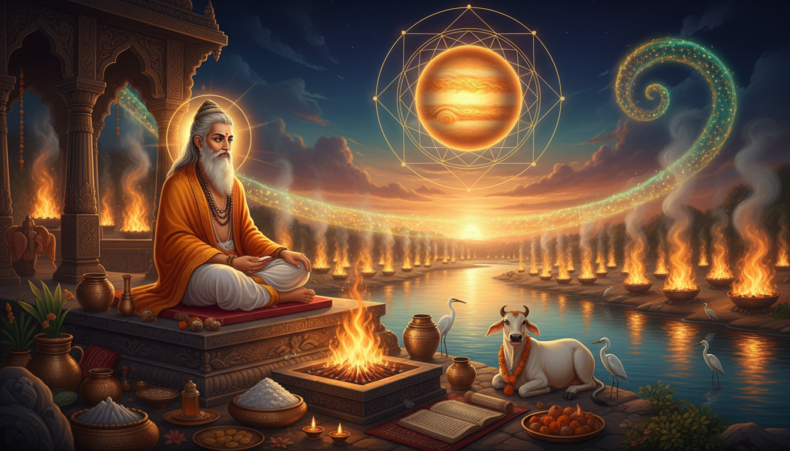

1. A Name That Carries a Planet
Start with the name, because in the Vedic tradition a name is rarely decorative. The sage is Bharadvaja, and in the Rigvedic texts he carries the fuller form Bharadvaja Barhaspatya — Barhaspatya meaning "son of Barhaspati," and Barhaspati being the Vedic deity-sage Brihaspati. Brihaspati is the god of Thursday, the day of Jupiter. His father is Angiras, his mother Surupa, his consort the goddess Tara, and in the Rigveda he is described as a sage "born from the first great light, the one who drove away darkness," carrying a special bow whose string is Rta, the cosmic order that is the basis of dharma. He is revered as Guru, teacher, by all the Devas. He is called Bramanaspati, Purohita, Angirasa and Vyasa, and he is sometimes identified with Agni, the fire.

So the first thing to know is that this is not a rishi who happens to be associated with Jupiter in a later astrological linkage. His own patronymic is a planetary one. When a later text wants to reach Jupiter through a human being, it reaches him through this man.
The compound itself is built from bhara(d) and vaja(m), which together mean "bringing about nourishment". This is worth pausing on, because the same name gave the tradition a posture: Bharadvajasana, a twisting asana in modern yoga described as "Bharadvaja's twist," and named in the source tradition as the "nourishing pose." The word that names the family also names the posture and names the family's work. A clan whose root idea is nourishment, whose father is Jupiter, whose hymns include the earliest praise of the sacred character of the cow, and which produced one of the oldest ritual manuals in Sanskrit and an archery Upanishad of the Mahabharata, is a clan that took seriously the question of what sustains a life.
2. The Family That Owns the Sixth Mandala
Hymns ascribed to members of the Bharadvaja family form a major portion of the Rigveda, above all the sixth mandala, together with others in the fourth, ninth and tenth. The family is represented by some sixteen seers. Bharadvaja, son of Brihaspati, is traditionally regarded as its founder, though many of the hymns later attributed to him or to Bharadvaja Barhaspatya were more probably composed by remote descendants.
This is the point where a modern reader should slow down, because the family is not just a lineage of names. It is a school with a method and a patron deity. Early Bharadvajas worshipped the pastoral god Pushan. Subsequent Rigvedic hymns incorporated him into the wider pantheon as Indra's brother or helper and linked him with Soma. And with this rise of Pushan's status the Bharadvajas became sacrificial officiants for pastoralist tribes, and their compositions, including the earliest hymn praising the sacred character of the cow, were given a place in the Rigveda.
Early Bharadvajas worshipped the pastoral god Pushan.
— Wikipedia, Bharadvaja, on the family's own deity
Pushan is one of the most underrated figures in the Hindu pantheon, and understanding him is what makes the Jyotish material at the end of this article work rather than just sound decorative. Pushan is a psychopomp, a soul-guide who conducts souls to the other world. He is a knower of paths and guardian of roads. He is responsible for marriages, journeys, roads and the feeding of cattle. He protects travelers from bandits and wild beasts, and protects men from being exploited by other men. He is a supportive guide, a "good" god, leading his adherents toward good pastures and wealth. He is married to Surya, the daughter of the Sun.
Read that roster again and notice what it contains: roads, journeys, marriage, cattle, soul-guiding, and protection from exploitation by other people. That is not a war-god's list and not a rain-god's list. That is the list of a deity who governs the vulnerability of moving through the world with your property and your family. A clan of ritual officiants who made Pushan their patron had chosen, as their special subject, the question of how a vulnerable person survives a dangerous road.
And it is precisely there that the sixth mandala turns. The hymns of the Bharadvajas reflect both pastoral life and a martial aspect, with references to Atharvanic magic and connections to the Atharvangirases. The Atharvaveda is the Veda whose oldest name, per its own verse 10.7.20, was Atharvangirasah — a compound of "Atharvan" and "Angiras," both Vedic scholars — and which is sometimes called the "Veda of magical formulas."
So the same family that officiated for pastoral tribes also carried, in its later hymns, the technical material of Atharvanic magic: the rites for protection, for warding off, for the sharp edge of a hostile world. If you have been reading this blog series for the dosha remedies — Kaal Sarp, Gandanta, Pitru, Mangal — you will recognise the family. These are the people whose craft is the boundary between the danger and the person standing on the wrong side of it.
3. The Eleventh Seat: Bharadvaja in the Twenty-Four Rishis of the Gayatri
Here is the fact that anchors this entire article, and it is a hard, checkable one.
The Gayatri mantra is built on a metre of twenty-four syllables, and in the tradition this structure is read four or five times over. The twenty-four letters of the mantra represent twenty-four Vedic devatas, twenty-four Vedic meters, twenty-four shaktis, twenty-four tattvas, twenty-four mudras — and twenty-four Vedic rishis. The roster of those twenty-four rishis is:
Vāmadeva · Atri · Vaśiṣṭha · Śukra · Kaṇva · Parāśara · Viśvāmitra · Kapila · Śaunaka · Yājñavalkya · Bharadwāja · Jamadagni · Gautama · Mudgala · Vyāsa · Lomasa · Agastya · Kauśika · Vatsa · Pulastya · Manḍūka · Dūrvāsa · Nārada · Kaśyapa
Bharadwāja holds the eleventh seat.
The Puranas mention that only 24 rishis since antiquity have understood the whole meaning of — and thus wielded the whole power of — the Gayatri Mantra. Vishvamitra is supposed to have been the first, and Yajnavalkya the last.
— Wikipedia, Vishvamitra
That is the frame. Twenty-four rishis in all of recorded history fully understood the Gayatri; the tradition says the first was Vishvamitra, who is credited with the Gayatri mantra itself at Rigveda 3.62.10, and the last was Yajnavalkya. Bharadvaja sits between them, in the eleventh place, and he sits between them in the text too, because Yajnavalkya is his successor in the lineage and his son.
Now put the two rosters side by other, because this is where the article's real subject appears.
The twenty-four devatas of the Gayatri's twenty-four letters are, in one of the standard listings: agni, prajāpati, soma, īśāna, savitā, āditya, bṛhaspati, maitrāvaruṇa, bhaga, āryamān, gaṇeśa, tvaṣṭā, pūṣā, indrāgni, vāyu, vāmadeva, maitrāvaruṇi, viśvedevā, mātṛkā, viṣṇu, vasu, rudra, kubera, aśvins.
The Padmapurana's list of presiding deities for the same twenty-four letters gives another ordering, and it also contains both: bṛhaspati at the seventh, pūṣā at the eleventh. The Yoga Yājñavalkya's list of twenty-four devatas contains both as well — bṛhaspati seventh, pūṣā eleventh.
So the man who holds the eleventh seat among the rishis of the Gayatri has both his father and his clan's patron deity inside the same twenty-four-letter hymn. Barhaspatya and Pushan are not two separate threads in this article. They are two of the twenty-four devatas of the very mantra whose twenty-four rishis include Bharadvaja. That is a precise, verifiable, load-bearing alignment, and it is the reason this article can talk about Jupiter's graha without smuggling in a false link.
The twentieth of the twenty-four meters is where the mantle closes, and it does so in the way that matters for anyone doing remedial work. The last of the twenty-four Vedic meters of the Gayatri are Bhūḥ, Bhuvaḥ, Svaḥ, Jyotiṣmati — earth, atmosphere, the middle region, and the luminous one. A hymn that spends twenty of its twenty-four syllables on named devatas and its last four on the vastness itself is a hymn built to be recited, not contemplated. Its power is in the doing of it, which is the whole argument of the ritual section below.
4. The Madhu Kanda: Where Bharadvaja Wrote
The Brihadaranyaka Upanishad is generally dated to the 7th or 6th century BCE. It is the last part, the fourteenth kanda, of the Shatapatha Brahmana of the Shukla Yajurveda. It has six adhyayas and two major recensions, the Madhyandina and the Kanva. It is divided into three sections, and the division is the point:
- Madhu kanda — the 4th and 5th chapter of the fourteenth kanda of the Shatapatha Brahmana.
- Muni kanda, or the Yajnavalkya Kanda — the 6th and 7th chapter.
- Khila kanda — the 8th and 9th chapter.
The Madhu kanda consists of six brahmanas each, with varying numbers of hymns per brahmana. The first chapter of the Yajnavalkya kanda consists of nine brahmanas, the second six; the Khila kanda has fifteen brahmanas in its first chapter and five in the second.
In the tradition, the Madhu kanda — the first section of the text, the one that opens it — is Bharadvaja's, and the Muni kanda that follows it is Yajnavalkya's. The name "Madhu," honey, is itself a doctrinal marker: the Madhu theory, in Paul Deussen's phrase, is one of the foundational principles of the Vedanta schools and of the other āstika schools of Indian philosophy, holding that "Atman exists," that the Self exists, and that this Self is the composite fruit of numerous actions on the field of flowers.
The Upanishad opens with the great hymn to Yamuna and Agni, the Daikata Yamunagni hymn, which in the Mahabharata's account of the debate at Janaka's court is recited by Yajnavalkya. The setting is the Bahudakshina Yajna, the great sacrifice of gifts hosted by King Janaka in Mithila, at which the assembled scholars of the kingdom were examined and the best of them found. It was there that Yajnavalkya, described in the texts as blunt, provocative and sarcastic, spoke the hymn that opens the Upanishad.
So the chain runs: Bharadvaja, the eleventh rishi of the Gayatri, author of the Madhu kanda; his son and successor Yajnavalkya, the last of the twenty-four, who recites the Yamunagni hymn in the royal court. And the Yamunagni hymn, in the remedial tradition, is one of the most specifically Jupiter-directed mantras in the whole corpus: it addresses Yamuna, whose name is taken in the ritual lineage as a form of the Goddess and as the sister of Yama, and Agni, the fire that carries the offering. In Jyotish practice this hymn is the standing remedy for Guru — for Jupiter's affliction, for the difficulties Jupiter creates when it is badly placed or badly aspected, and for the specific problems it causes in the houses of the 5th and 9th, children, dharma, teachers, inheritance and counsel.
5. The Thousand Yajnas: The Transaction That Made the Lineage
The Mahabharata's Shanti Parva carries the account that explains why a family of ritual officiants ends up holding the eleventh seat of the Gayatri. In it, a brahmin performs a thousand sacrifices — sahasra yajna, a thousand-fold yajna — and for that extremity of performance is given the Gayatri mantra by Brahma himself. In the Jaiminiya and Brihadaranyaka lineage as it is normally transmitted, that brahmin is Bharadvaja, and the mantra he receives he passes on to his son Yajnavalkya, who is the last of the twenty-four.
This is the substance of the question the topic poses: how did Bharadvaja achieve a thousand yajnas in a single day, and what is the Yamunagni hymn that came out of it? The answer has three layers and it is worth keeping them apart.
The achievement is a feat of compression, not of brute force. A thousand sacrifices is not a thousand rituals performed with more energy; it is a single rite performed with such density that it amounts to a thousand. The technique is the subject. The sixth-mandala hymns describe exactly this world: pastoral life with a martial aspect, Atharvanic magic, and the connections to the Atharvangirases whose material is the Veda of magical formulas. What is being compressed is not effort but invocation — the number of times the fire is fed, the number of times the formula is spoken, the number of separate intentions carried in a single unbroken posture.
The payment is a mantra, and the payment reveals the value. Brahma does not give a cow. He gives the formula. In a culture where the cow hymn was already the clan's property and the sixth mandala already the clan's technique, the thing that was missing was not technique or cattle but the formula. The thousand yajnas bought the one thing the family could not compose for itself.
The lineage is the proof. Yajnavalkya, the last of the twenty-four rishis, is the one who carries it into Janaka's court, into the Muni kanda, into the opening of the Upanishad as it now stands. The transmission chain in the Garuda Upanishad makes the same shape explicit in a different domain: Narada, Brihatsena, the god Indra, the sage Bharadvaja, and then Bharadvaja's students, who spread it across the world.
Notice where the transmission picks up. It does not begin with a man. It begins with a god who is also a teacher — Indra — and passes through a rishi who is also the son of the god of Jupiter. The man who stands at the hinge between the divine gift and the human transmission is, in both cases, a descendant of Brihaspati.
6. The Occult Register: The Garuda Upanishad and the Snake-Charm
The Garuda Upanishad is the clearest surviving window into the practical, protective, non-ceremonial craft of this family, and it is where the occult side of the sixth mandala becomes concrete.
The Garuda Upanishad is one of the 108 Upanishadic scriptures. It is dedicated to Garuda, the eagle-demigod mount of Vishnu; it is a Vaishnava Upanishad associated with the Atharvaveda, and it is considered "late" in terms of dating. It has twenty-five stanzas. Its purpose is stated without euphemism: it has mantras and charms that are said to cure poison. Its charms, the text says, not only prevent and remedy snakebite and the venom, but also poison from any other source — other poisonous animals, weapons and supernatural beings. The aim is freedom from fear of all types of poisonous creatures.
The snake charm is similar to the other spells of the sage Bharadvaja, who is said to have taught the Garuda Upanishad charms to his disciples. Bharadvaja's spells are said to prevent or cure infectious diseases, wounds by weapons and carnivorous wild beasts like tigers and bites and infestations by insects and worms.
— Wikipedia, Garuda Upanishad
That sentence is the whole article in one line. The Garuda Upanishad's central charm is described as similar to the other spells of Bharadvaja — implying a larger body of practice of which the snake-charm is the surviving specimen. And the wider body of practice is: infectious diseases, wounds by weapons, bites of tigers, infestations by insects and worms. Not temple ritual. Not meditation on the Self. The immediate, unglamorous, body-level hazards of being alive in a forest, in a war, in a village with bad water.
The German orientalist Paul Deussen, who partially translated the text, describes it essentially as a snake-charm dedicated to Garuda, the mount of Vishnu and the eternal foe of serpents. It serves two objectives: to prevent snakebite, and to alleviate the evil effects of the bite. The reason the charm was elevated to the status of an Upanishad, in Deussen's account, is entirely practical: the imminent danger of snakebite in India, where people had to walk in the dark in snake-infested regions or work in fields and forests, and where pious people following the dictum of Ahimsa could not kill the snakes.
That is a detail worth sitting with. A whole Upanishad exists because of a practical problem with a practical solution, and the solution was not slaughter. It was a charm. The reasoning is internally consistent: if snakes must not be killed, they must be rendered harmless by other means, and the means must be carried on the body and known by heart, because the person walking through a field at night cannot consult a library.
The text begins with a generic prayer to the gods for protection. Garuda, Indra, the sun-god Surya and Brihaspati are invoked for their blessing. The prayer ends with the wish: Let there be Peace. And the knowledge is declared to have been taught by Brahma to the sage Narada, and passed through the successive teachers already named: Narada, Brihatsena, Indra, the sage Bharadvaja. Then the second part of the text is dedicated to the dhyana, the iconographical form of the deity that the devotee must visualise while performing meditation. Dhyana is not optional ornament in this system; it is a technical component of the operation.
There is one more thread here, and it runs through a different body of text. The Rudrakshajabala Upanishad records that a group of sages including Nidagha, Jadabharata, Dattatreya, Katyayana, Bharadvaja, Kapila, Vasishtha and Pippalada asked Kalagni Rudra — a destructive form of Shiva identified with Bhairava — about the rudraksha. The answer given is that for the destruction of the Tripura, Rudra closed his eyes for a thousand years in meditation, and the tears that fell on earth created the rudraksha seed. The mere utterance of the word "rudraksha" is said to bestow the merit of the donation of ten cows; its sight and touch equals the charity of twenty cows; its wearing absolves all sins, with its sight equal to the merit of a crore and its wearing yielding a hundred crore. The text also specifies the method of wearing — on the hair tuft, thirty around the head, thirty-six in a necklace, sixteen on each arm, twelve on each wrist, fifteen around the shoulders, and 108 in the yajnopavita, the sacred thread.
That is a complete remedial technology: a material, a method of wearing it, a count, a posture, and a stated value. Nothing in it requires a temple.
7. The Teacher of Drona, the Archer's Upanishad, and the Doctor's Lineage
Bharadvaja's line produced the most consequential martial teacher in the Mahabharata, and the tradition does not hide the awkward parts of it.
According to the Vishnu Purana, Bharadvaja had a brief liaison with an apsara named Ghritachi, and together they had a child who grew up into a warrior-Brahmin named Drona. In the Mahabharata, Drona is instead born when Bharadvaja ejaculated his semen in a pot. Bharadvaja is therefore directly linked to two important characters of the epic — Dronacharya and Asvatthama, the son of Drona. Bharadvaja trained Drona in the use of weapons, and had two disciples of his own: Agnivesa, who taught Drona the mastery of the Agneya weapon, and Drupada, who became king of the Panchala kingdom.
The Mahabharata records the martial traditions more broadly: the recovery of Kashi by Pratardana with Bharadvaja's aid, and a long association with astras — the supernatural weapons. To the Mahabharata's Shatapatha Brahmana lineage, the Dhanur-veda — the archery Upaveda — is credited to Bharadvaja at chapter 12.203.
In the Mahabharata, Drona is instead born when Bharadvaja ejaculated his semen in a pot.
— Wikipedia, Bharadvaja
Read that again with the Garuda Upanishad in the same frame and something sharp emerges. The man who wrote the snake-charm and the anti-poison text, who is credited with the archery Upanishad, who is credited with a body of spells against infection, weapon-wounds, tigers and insects, is also the man who, by the Mahabharata's own account, conceived a weapon-master in a pot. The tradition records the births in the same register — as technique. The other birth legend puts Bharadvaja on the ashram road where Rama, Sita and Lakshmana arrive at the start of the fourteen-year exile, and where the sage offers them the whole exile and they insist on going deeper to Chitrakuta, three krosha away, and he gives them directions. A brahmana by birth and a king by adoption, Bharadvaja descends to both brahmins and kshatriyas, and both claim him.
And there is a third thread, the one that matters for readers who came here for the remedies. The Charaka Samhita — the ancient Indian medical treatise — attributes Bharadvaja's learning of the medical sciences to Indra. He pleaded that poor health was disrupting the ability of human beings to pursue their spiritual journey, and then Indra provided both the method and the specifics of medical knowledge. The Charaka Samhita also carries sections of Bharadvaja's own teaching on medicine and causal phenomenon, attributed by Gerrit Jan Meulenbeld with many theories and practical ideas in ancient Indian medicine. And here is the part that will surprise: Bharadvaja states that an embryo is not caused by wish, prayers, urging of mind or mystical causes, but is produced from the union of a man's sperm and menstrual blood of a woman at the right time of her menstrual cycle, in her womb.
A family that worshipped Pushan, that carried Atharvanic magic in its hymns, that wrote a snake-charm Upanishad — and whose most rigorous thinker, in the medical tradition, flatly refused the mystical explanation of conception, and replaced it with a mechanism. That is not a contradiction inside the tradition. It is the tradition refusing to confuse awe with explanation. The Garuda Upanishad's charms are for the terror of a snake in the dark. The Charaka's mechanism is for the question of how a child begins. Different tools, held by the same school, and the school knew which was which.
8. The House of Seven: Bharadvaja in the Saptarishi
Bharadvaja is also one of the seven.
An early prototype of the "Saptarishi" concept stems from the six families associated with the six Family Books of the Rigveda Samhita — Mandalas 2 to 7 in ascending order: Gṛtsamāda, Viśvāmitra, Vāmadeva, Atri, Bharadvaja, Vasiṣṭha. Mandala 8 is mostly attributed to Kaṇva, who can be considered a seventh prototypical Saptarishi.
The earliest formal list of the seven rishis is given by Jaiminiya Brahmana 2.218–221: Agastya, Atri, Bharadvaja, Gautama, Jamadagni, Vasishtha, and Vishvamitra. This is followed by Brihadaranyaka Upanishad 2.2.6 with a slightly different list: Atri, Bharadvaja, Gautama, Jamadagni, Kashyapa, Vasishtha, and Vishvamitra. The later Gopatha Brahmana 1.2.8 gives yet another variation, adding Gungu to a roster that again keeps Bharadvaja.
In post-Vedic texts different lists appear; some of these rishis were recognised as the "mind-born sons" (manasaputra) of Brahma, the representation of the Supreme Being as Creator. Other representations of the Supreme Being are Shiva as the Destroyer and Vishnu as the Preserver. Since these seven rishis were also among the primary eight rishis, who were considered to be the ancestors of the Gotras of Brahmins, the births of these rishis were mythicised. According to legend, the seven rishis in the next manvantara will be Diptimat, Galava, Parashurama, Kripa, Drauni or Ashvatthama, Vyasa, and Rishyasringa.
Two things are worth holding here. First, the Saptarishi were not a committee of saints but a sky-pattern: the seven stars that hold the pole of the heavens and wheel the year, which is why they are the first thing in the traditional New Year observance and why they are the seven used as the base unit of the mahayagna, the great sacrifice. Second, Bharadvaja sits in the earliest list and in the Brihadaranyaka list, and the Brihadaranyaka is his own text's later section. The rishi who wrote the Madhu kanda is named in the colophon of the Upanishad that carries his kanda.
9. What Jupiter Actually Is, in the Chart
Before the remedy, the graha. Everything in this article's astrology is downstream of what Jupiter is.
Jupiter is the traditional ruling planet of Sagittarius and Pisces, and it is exalted in Cancer. It orbits the Sun in 11.9 years, spending almost an earth year — 361 days — in each sign of the zodiac. In astrology, Jupiter is associated with principles of expansion, growth, prosperity, transformations, incredible feats, mass movements, and the need to cooperate or share with another if each is not to be destroyed. The Romans believed Jupiter granted them supremacy because they had honoured him above all other gods: he personified the divine authority of Rome's highest offices, internal organization, and external relations.
The relevant thing for a remedy article is not the Roman part but the Jyotish classification. Of the nine members of the navagraha — the Sun, Moon, Mercury, Venus, Mars, Jupiter, Saturn, and the two nodes of the Moon, Rahu and Ketu — the natural benefics are Jupiter, Venus, Mercury and the waxing Moon; the natural malefics are Mars, Saturn, Rahu and Ketu, along with the Sun under certain conditions. A negative planetary impact is termed a dosha, and Saturn and the shadow planets are considered the most consistently challenging.
Jupiter sits at the top of the benefic column, and that is exactly why Jupiter's affliction is treated as a serious matter. A planet that is supposed to expand, counsel and confer blessing, when it is jammed, aspects a house badly, or is debilitated in the relevant sign, does not merely stop helping. It takes with it the houses it rules: the 5th and the 9th. Children, dharma, teachers, fortune, counsel, the father, the guru, the long road. This is why the standard remedial literature treats Jupiter's affliction as a moral problem and not only a financial one — the 9th house is the house of right direction, and a broken 9th is a person who has lost their bearings and calls it practicality.
And Jupiter has a nakshatra, which is where this article's opening fact finally locks into the astrology.
Punarvasu is ruled by Jupiter (Guru) and is symbolised by a quiver of arrows, signifying renewal, restoration, and return. Its presiding deity is Aditi, the mother of the gods. The nakshatra system is the oldest layer of Jyotish — the term refers to a nakshatra as one of the twenty-seven sectors along the ecliptic, each divided into four padas, or "steps," with the first astronomical list in the Vedanga Jyotisha; in classical scripture the asterisms are personified as daughters of Daksha and as wives of Chandra, the god of the Moon.
There is a specific traditional statement attached to Punarvasu and Jupiter that is worth having verbatim, because it is unusually precise about conditions:
Aditi, where the ruling star of day is Punarvasu (Nakshatra), the asterism is in the ascendant, and when five of the nine planets viz., Sun, Mars, Jupiter, Saturn, and Venus are at their highest position, when Jupiter with Moon is ascendant in Cancer, and when day is advancing, then Queen Kausalya gave...
— Wikipedia, Punarvasu, citing the Kāvya
Jupiter with the Moon in Cancer, the exaltation sign, in the ascendant, on Punarvasu, in the rising part of the day, with the benefics at their height. That is a whole horoscope assembled around one planet. And the nakshatra's own emblem is a quiver of arrows — the archer's ammunition, held in reserve, meaning renewal, restoration, and return.
Hold that image next to the story of the man in the eleventh seat. A quiver of arrows: the means stored before the shot, ready to be drawn. A thousand yajnas compressed into a single rite. A family of ritual officiants who took the trouble to preserve, at the cost of a thousand sacrifices, a formula that had to be carried in the memory of one person who then had to pass it on before he died. Restoration and return. The nakshatra of Jupiter's renewal is symbolised by ammunition held in reserve, and the rishi of the Gayatri's eleventh seat is the man who held a formula in reserve and brought it back.
That is not the whole tradition's meaning, and it should not be overstated. But it is the specific shape of the alignment this article can actually document, and it is much stronger than a general claim that Jupiter and the Gayatri are both important.
10. The Working Form: The Form of the Form
The working form: the seat first. The eleventh seat of the Gayatri is not a rank to be admired; it is a function. On Thursdays, the day of Jupiter and Brihaspati, sit for eleven minutes before dawn, or at least in the first hour of the day, facing east. The number is the point: eleven minutes, the count of the seat. Keep a rosary of twenty-four beads and move one bead per minute; twenty-four beads, the letters of the mantra, one letter per bead. You are not counting anything. You are walking the same twenty-four steps the tradition built.
The working form: recite, do not meditate. The Gayatri's twenty-four syllables are a formula, and a formula is not improved by contemplation:
tat savitur vareṇyaṃ bhargo devasya dhīmahi
dhiyo yo naḥ prachodayāt ||
Three lines, twenty-four syllables, the mantra that Vishvamitra is credited with composing at Rigveda 3.62.10 and that only twenty-four rishis in all of history are said to have fully understood. Recite it at a natural pace, unhurried, with the whole verse visible or audible in the mind rather than recited as a tune you have heard a thousand times. Eleven minutes, twenty-four beads, three lines.
The working form: the Yamunagni, for Jupiter specifically. When Jupiter is the problem — badly placed, debilitated, aspected by the functional malefics, or simply under continuous transit pressure from Saturn or Rahu — the standing Jyotish remedy is the Daikata Yamunagni hymn from the head of the Brihadaranyaka, the hymn Yajnavalkya recited in Janaka's court. It addresses Yamuna and Agni. Use it as a Jupiter remedy for the 5th and 9th house, for a child, for a teacher or a guru relationship, for counsel that has gone wrong, and for the specific unrest that comes from a Jupiter that has nothing to give because it has been squeezed. Recite it daily for a fixed period — forty days is the traditional count for a mantra of this class — at the same hour, without altering the text. The Agni in the hymn is not decoration: it is the vehicle. Light a lamp with a sesame-oil wick and recite to it, and do not let the flame be the object of attention. The flame is the route.
The working form: the Pushan half. Because the Gayatri's own twenty-four devatas contain both bṛhaspati and pūṣā, the Jupiter remedy and the protection remedy are the same hymn and can be run together. Pushan is the guardian of roads and the psychopomp, the one who "protects travelers from bandits and wild beasts, and protects men from being exploited by other men." On the days when Jupiter is afflicted, the specific hazard is not abstract bad luck — it is the theft of the thing Jupiter governs: the counsel, the child, the direction, the inheritance. Say it plainly once before you sleep: name what has been taken from you that Jupiter should have provided, and name the person or the arrangement that took it. Pushan is the god who makes men not easy to exploit. The naming is not a spell. It is the part of the charm that has to be carried, and as the Garuda Upanishad shows, this family's method is that what you carry has to be in you, not in a temple.
The working form: the body, if the chart shows a hard Jupiter. The Garuda Upanishad is the practical member of this family, and it is worth using it for what it is good at. Its twenty-five stanzas include mantras and charms for poison — from snakes, from other animals, from weapons, from supernatural beings — and Deussen's note explains exactly why the tradition elevated a snake-charm to the standing of an Upanishad: because the person walking through a field at night cannot consult a library, and because Ahimsa forbids the easier remedy. The working form is the same in kind. If Jupiter's affliction in your chart shows up as fear, as recurring threat, as the sense that something in the world is out to get you, the remedy is a charm you carry and recite, not a donation. Twenty-five stanzas exist for this. Work with them, and use the dhyana exactly as the text instructs: the image of Garuda is a required technical component, not an optional devotional extra.
The working form: the rudraksha count, and what it does. If the problem is scatteredness — Jupiter's blessing spread thin across too many houses, so that no single area of life receives it — the Rudrakshajabala Upanishad gives you a material object and a number. The specification in the text is exact: on the hair tuft; thirty around the head; thirty-six in a necklace; sixteen on each arm; twelve on each wrist; fifteen around the shoulders; and 108 in the yajnopavita, the sacred thread. The text also grades by fruit size, the amla being best, then the berry, then the black gram, and it rejects a bead that is damaged, broken, worm-infested, without thorns, or of abnormal shape. Follow the text's own criteria; that is what the counts are calibrated to. And note the sizes it prefers: the largest. The tradition is not asking for a token.
The working form: the yajna, if you can do it properly. The srautasutra and grhyasutra attributed to Bharadvaja are among the oldest srauta and grhya sutras known, after Baudhayana's Kalpasutra — that is, this family wrote down the manual. The manual is the point of the tradition, not the ornament on it. If you perform a yajna, perform it with the manual's structure: a vedi (ritual altar) and a kalasha (vessel), the nine grahas and their associated deities invoked, their prescribed mantras recited, and offerings through homa of ghee, grains, sesame and specified woods made to the individual grahas, with a Purohit (priest) conducting on behalf of the Karta (the person for whom it is done). Navagraha worship is maintained at both the personal domestic level and inside temple precincts, where most temples keep a designated Navagraha mandapa in which the nine deities are installed in a prescribed spatial arrangement, with Surya at the centre and the other eight in the eight directions. Where it is circumambulated, the direction is clockwise, on the understanding that this increases the positive influence of the grahas and decreases the negative.
The working form: keep it small enough to keep. Eleven minutes, twenty-four beads, three lines, one lamp, one rudraksha worn the way the text says. Do it for one full cycle of the Sun and Moon before you judge it — and do not judge it by whether you feel different, but by whether the 9th house of your life has become answerable. A Jupiter that is repaired does not feel lucky. It feels like the direction has come back into a shape you can hold, which is a quieter thing and a more useful one. Bharadvaja was a brahmana by birth and a king by adoption; he belonged to both lineages at once, and the whole tradition of the Madhu kanda is built on the claim that you can belong to both at once. That is the achievement, and it is repeatable.
11. What This Is, and What It Is Not
It is worth being plain about the status of all of this, because this article has been doing something slightly unusual with its sources and you should know what it was doing.
The hard claims are documented, and they are checkable. That Bharadvaja is the eleventh of the twenty-four rishis of the Gayatri; that his father is Brihaspati, the god of Jupiter and Thursday; that the Gayatri's twenty-four devatas include both bṛhaspati and pūṣā; that the Madhu kanda is his; that the family owns the sixth mandala and worshipped Pushan; that the Garuda Upanishad attributes to him the spell-body it describes; that the Jaiminiya Brahmana and the Brihadaranyaka colophon both name him among the seven — all of these are on the cited Wikipedia pages and can be checked in a minute. The archive of the family is also remarkable in its own right: sixteen seers, hymns across four mandalas, the Dhanur-veda of the Mahabharata, srautasutra and grhyasutra among the oldest known, sections of the Charaka Samhita, an asana, and a lineage through Narada, Brihatsena, Indra and Bharadvaja into the Garuda Upanishad.
The thousand yajnas and the Yamunagni are traditional, and the tradition is layered. The Mahabharata's Shanti Parva account of the thousand-fold yajna and Brahma's gift of the Gayatri, and the account of Yajnavalkya reciting the Daikata Yamunagni hymn at Janaka's Bahudakshina Yajna, are scriptural narratives — not archaeological or documentary findings, and the sources differ over details. The Yamunagni hymn itself is securely identified as the opening of the Brihadaranyaka, which is generally dated to the 7th or 6th century BCE, and the use of it as a Jupiter remedy is the remedial tradition's own long-standing practice rather than a claim about what the rishi did. This article has kept those two apart deliberately: the sixth mandala, the Pushan patronage, the Garuda snake-charm, the Saptarishi lists and the Brihasanyaka's structure are stated as what the sources state them to be, and the thousand yajnas and the court recitation are presented as what the tradition narrates.
What the article is actually arguing. It is not arguing that a rishi's biography is a prescription, and it is not asking you to believe that reciting a formula will move a planet. It is pointing out something more specific and more useful: that a whole school of Vedic ritual craft organised itself around one question — how does a person who is exposed, travelling, hunted, poisoned, or robbed survive — and answered it with things you can carry. A charm in the memory. A count of beads. A number of minutes. An image of Garuda. A bead worn on the sacred thread in a stated quantity. And that this school put Jupiter's own son in charge of its transmission, and put Jupiter and the family's own god into the twenty-four devatas of the same hymn, and made the nakshatra of Jupiter's renewal a quiver of arrows held in reserve.
And the honest caveat. The Garuda Upanishad is explicitly a late Upanishad, and it is a charm manual. The Atharvanic magic of the sixth mandala is a ritual technology, not a claim about how the universe works. The remedial use of the Yamunagni for Jupiter's graha is a practice, not a demonstrated mechanism, and no tradition that asks you to recite a formula should also be asked to prove the formula by statistics. What a tradition can offer, and what this one offers unusually well, is a method for working with fear and obstruction: name it, count it, carry it, wear it, and do it again tomorrow. The Garuda Upanishad was written for people walking through fields at night who could not kill the snake and could not consult a library. That is still, in most weeks, the actual situation.
What the story asks of you is not belief. It asks for a habit with a number in it. Eleven minutes. Twenty-four beads. One lamp. A thousand yajnas was the price of the formula; the price of using it is eleven minutes on a Thursday morning, which is a bargain.
Sources
7. Jupiter (astrology) - Wikipedia)
- Bharadvaja - Wikipedia
- Gayatri - Wikipedia
- Brihaspati - Wikipedia
- Pushan - Wikipedia
- Punarvasu - Wikipedia
- Navagraha - Wikipedia
- Saptarshi - Wikipedia
- Garuda Upanishad - Wikipedia
- Rudrakshajabala Upanishad - Wikipedia
- Brihadaranyaka Upanishad - Wikipedia
- Yajnavalkya - Wikipedia
- Vishvamitra - Wikipedia
- Atharvaveda - Wikipedia
- Nakshatra - Wikipedia
- Shukla Yajurveda - Wikipedia
- Shatapatha Brahmana - Wikipedia
- Yajna - Wikipedia